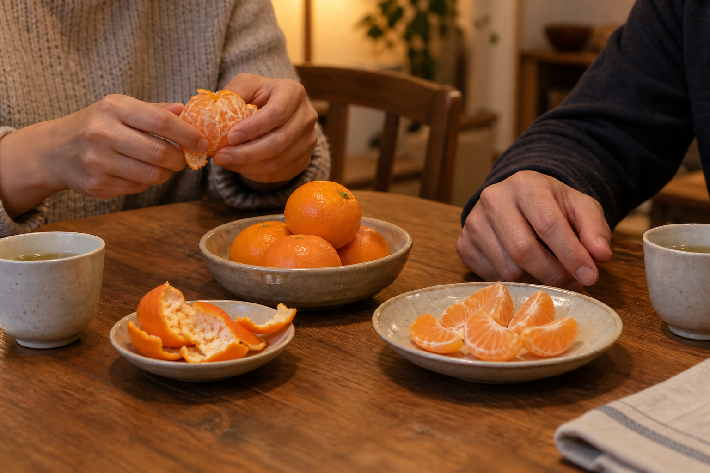

STORIES · 2026.09.16
귤을 까는 동안,
식탁의 말이 조금 느려집니다
저녁 그릇을 치운 자리에 귤과 작은 접시를 놓습니다. 껍질을 벗기고 한 조각을 건네는 사이, 서둘러 묻던 안부에도 잠깐의 틈이 생깁니다.

저녁 설거지를 끝내고 앉았는데, 맞은편 사람은 아직 말이 없습니다. “오늘 어땠어?” 하고 묻고 나면 대답을 기다리는 몇 초가 괜히 길게 느껴집니다. 그때 식탁 한쪽에 있던 귤을 가져옵니다. 껍질을 담을 접시도 하나 놓습니다. 무슨 이야기를 해야 할지 정하지 않은 채, 우선 손부터 움직입니다.
귤껍질이 손끝에서 조금씩 벌어집니다. 한 번에 길게 벗겨지기도 하고, 작게 끊어지기도 합니다. 속살을 두 쪽으로 나눈 뒤 한쪽을 접시에 내려놓습니다. “먹을래?”라는 짧은 말에는 하루를 설명해 달라는 부탁이 없습니다. 상대는 한 조각을 집어도 되고, 잠깐 그대로 두어도 됩니다.
접시를 가운데로 밀어 놓으니 시선도 잠시 귤 쪽으로 내려갑니다. 줄곧 얼굴을 마주 보고 있을 때보다 침묵이 덜 어색합니다. 손에 묻은 껍질 조각을 털어 내고, 컵을 옮기고, 남은 귤을 다시 나눕니다. 그러다 “아까 버스를 놓쳤는데” 같은 말이 불쑥 나옵니다. 처음 물었던 안부의 대답은 그렇게 다른 자리에서 시작될 수도 있습니다.
누군가는 직접 까 먹는 편을 좋아하고, 누군가는 건네받은 조각을 천천히 먹습니다. 같은 식탁에 앉아도 손의 속도는 다릅니다. 조각을 내밀었다가 상대가 손을 펴지 않으면 접시에 놓아두면 됩니다. 같이 먹자는 마음이 꼭 지금 먹어야 한다는 재촉이 될 필요는 없습니다.
귤이 대화를 해결해 주는 것은 아닙니다. 피곤한 날에는 끝내 별말 없이 접시만 비울 수도 있습니다. 다만 질문 뒤에 곧바로 다음 질문을 붙이지 않아도 되는 시간이 생깁니다. 껍질을 까는 동안 기다리고, 한 조각을 먹는 동안 듣는 일. 식탁에 놓인 과일은 그 작은 기다림에 자리를 내어 줍니다.
마지막 껍질을 모으고 접시를 치울 때, 오늘의 대화가 길었는지는 잘 기억나지 않을 수 있습니다. 대신 귤 한쪽을 남겨 주었던 손은 떠오릅니다. 내일도 거창한 이야기를 준비하기보다 작은 접시 하나를 꺼내 볼까 합니다. 먼저 먹고 싶은 만큼 나누고, 말은 그다음에 와도 괜찮습니다.
KFA Editorial · 생활 속 장면을 구성한 에세이입니다. 특정 인물의 취재 기록이 아닙니다.